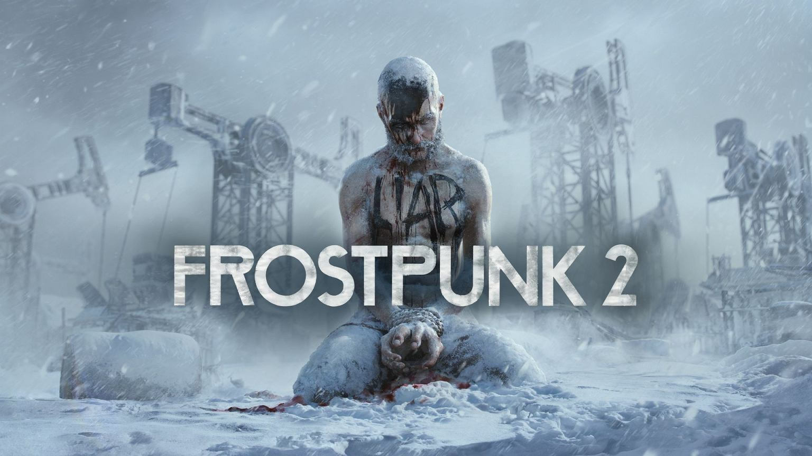
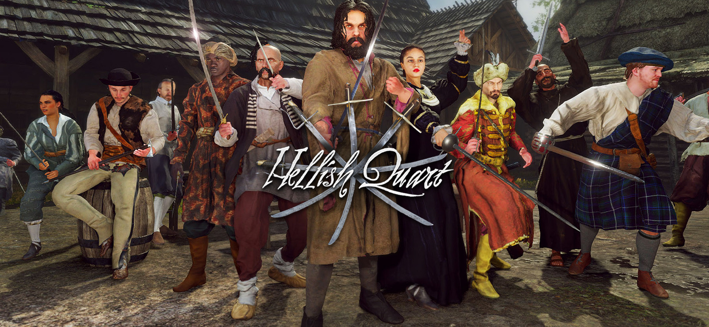
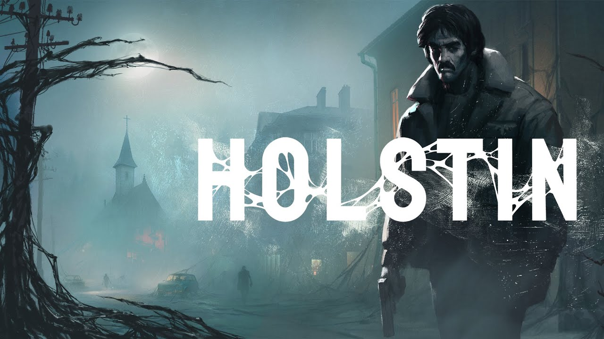
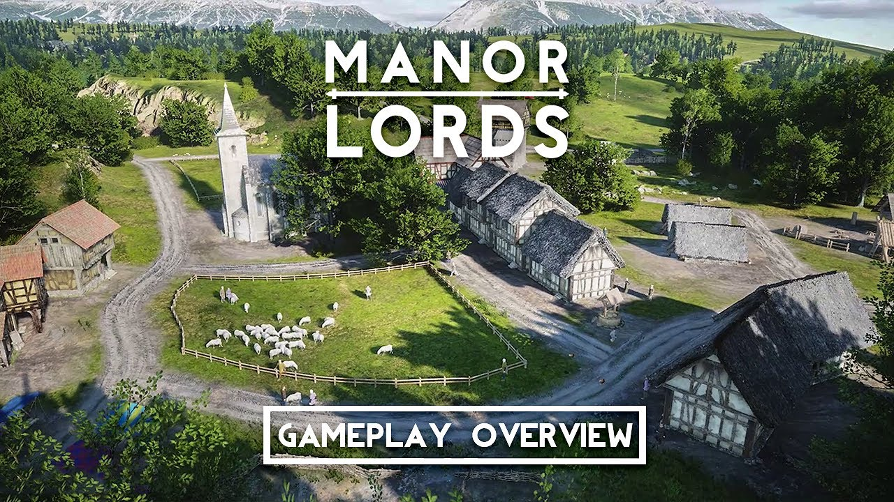
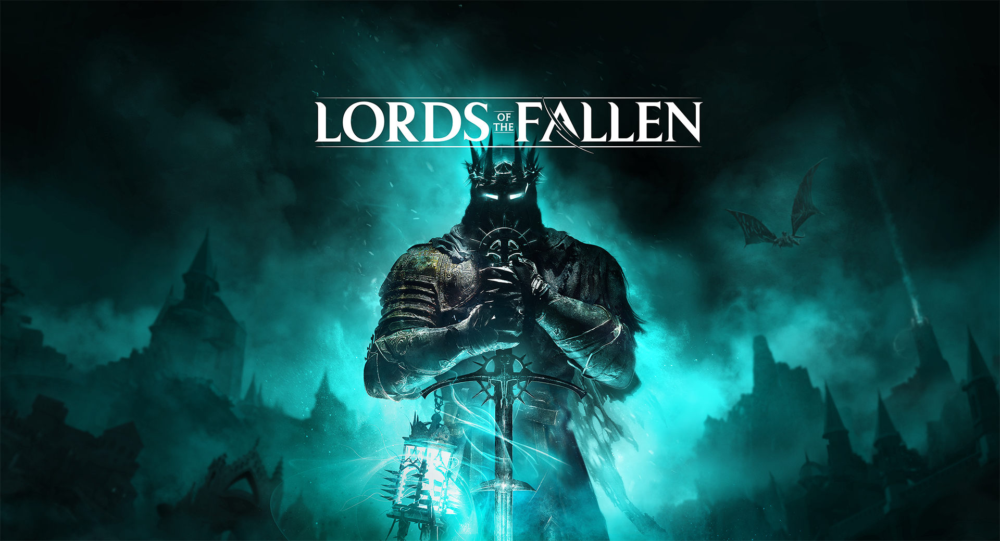
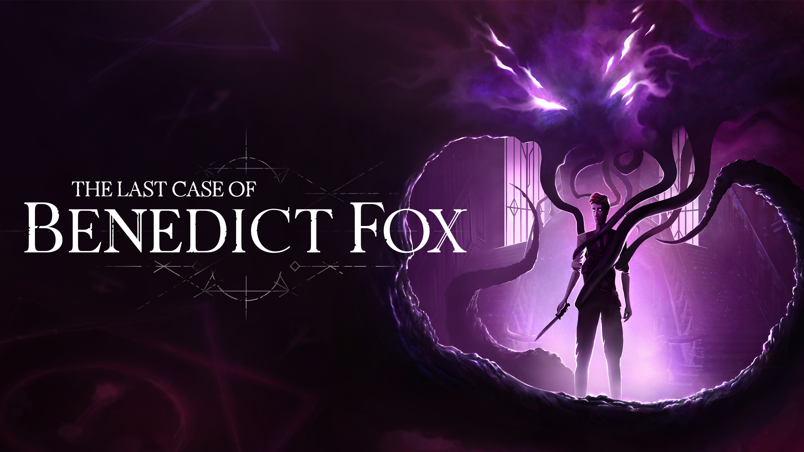
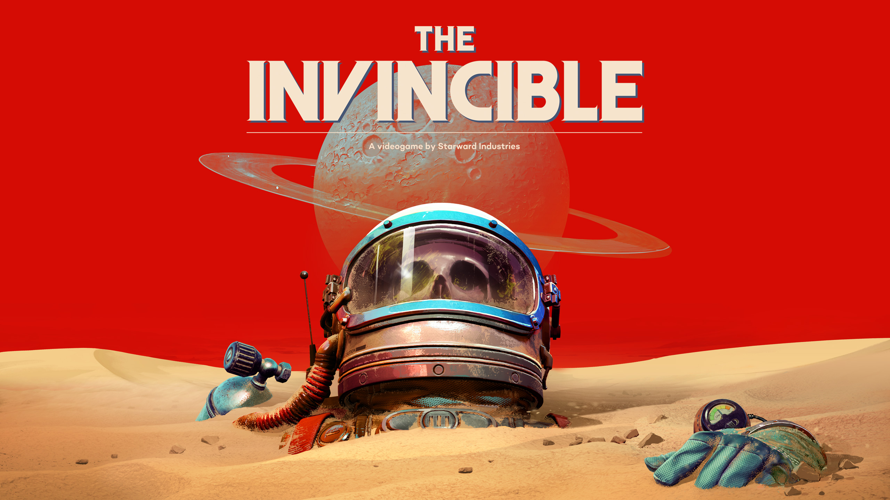

7 najciekawszych polskich premier w 2023 r.
1. Frostpunk 2
Na ten tytuł czeka z pewnością sporo osób. "Frostpunk 2" to kontynuacja ciepło przyjętej strategii o świecie skutym lodem, gdzie w skrajnie dramatycznych warunkach musimy przetrwać i rozwinąć cywilizację.Sequel ponownie przeniesie nas do krainy wiecznej zimy. Akcja rozpocznie się trzy dekady po apokaliptycznej burzy śnieżnej. Wcześniej mieliśmy do czynienia z erą pary, natomiast teraz spróbujemy inwestować w przemysł naftowy.
Po raz kolejny będziemy rozbudowywać metropolię i zaspokajać potrzeby różnych grup. Na własnej skórze przekonamy się, czy w tak bezwzględnej rzeczywistości można być łagodnym władcą, czy jednak konieczne stanie się wprowadzenie rządów twardej ręki.
Nie jest do końca przesądzone, że "Frostpunk 2" ukaże się w tym roku – niemniej na jej karcie na Steamie widnieje informacja, że produkcji należy spodziewać się już niebawem. Czyli są jakieś szanse, że 11 bit studios wypuści sequel w ciągu kolejnych miesięcy.

2. Hellish Quart
Produkcja od studia Kubold przenosi nas do XVII wieku. Trafimy do Rzeczpospolitej Obojga Narodów, gdzie mamy pojedynkować się z innymi. Wybierzemy jedną z wielu dostępnych postaci i broni – i przystąpimy do walki."Hellish Quart" zaoferuje kilka głównych trybów. Będziemy walczyć między innymi w trybie szybkiej potyczki, fabularnym czy lokalnej kooperacji.
Poniżej publikujemy wideo z rozgrywką. Trzeba przyznać, że wygląda to całkiem dobrze. Uwagę przyciąga świetna fizyka i realizm ruchu postaci.
Tytuł jest już od dłuższego czasu dostępny w ramach wczesnego dostępu, ale w kolejnych miesiącach ma zadebiutować ostateczna wersja. Sądząc po pochlebnych opiniach graczy na Steamie, to może się udać. Chociaż podobno nie jest to gra dla wszystkich, ponieważ ma dość wysoki poziom trudności.

3. Holstin
A to produkcja, która zdaje się być "podwójnie polska" – bo nie tylko tworzy ją rodzime studio, ale i dodatkowo jej akcja toczy się w Polsce w latach 90. A że to horror? No cóż, tak już jakoś wyszło.W tytule od studia Sonka wcielimy się w Tomasza, który wybierze się do podolsztyńskiej miejscowości Kolonii-Jeziornych, by odszukać zaginionego przyjaciela. Po koledze ani śladu, natomiast my szybko zdamy sobie sprawę, że to miejsce opanowały siły zła. Tomasz spróbuje odkryć tajemnicę miasteczka – i przy okazji wyjść z sytuacji w jednym kawałku.
Ostatnio twórcy podzielili się z internetem 15-minutowym nagraniem wideo z gameplayem. Uwagę zwraca pikselowy styl graficzny, który przywodzi na myśl produkcje z lat 90. Filmik potwierdza informację, że polski horror raczej nie zaliczy opóźnienia i można spodziewać się go jeszcze w tym roku. No i super.

4. Manor Lords
Kolejną z ciekawszych zapowiedzi na 2023 r. jest "Manor Lords", czyli połączenie strategii i city buildera od Slavic Magic. Akcja tytułu przeniesie nas do średniowiecza. Głównym zadaniem gracza ma być rozwijanie osady, ale to tylko brzmi tak łatwo.Bo generalnie jako średniowieczny władca będziemy mieć pełne ręce roboty. Trzeba tu wznosić budynki, zarządzać zasobami i produkcją i podbijać sąsiednie terytoria.
Przy tworzeniu gry deweloperzy inspirowali się architekturą i sztuką XIV-wiecznej Frankonii. Slavic Magic postawiło sobie za cel odzwierciedlenie tamtych czasów z historyczną dokładnością. Ma to odzwierciedlenie zarówno w oprawie wideo, jak i mechanikach gry – i reakcji środowiska na nasze działania.
I, jak sugeruje opis "Manor Lords" na Steamie, nie jest to tylko czcza gadanina. Na przykład czytamy: "niekontrolowana ekspansja będzie miała bezpośredni wpływ na środowisko. Stada jeleni będą migrować z dala od wkraczającej cywilizacji, brak płodozmianu pogorszy żyzność gleby, a wycięcie zbyt wielu drzew spowoduje wylesienie". Czyli twórcy naprawdę podeszli do tematu na poważnie.

5. Lords of the Fallen
Dla niektórych graczy ten tytuł może brzmieć znajomo – i nic dziwnego, bo "The Lords of the Fallen" to reboot gry o prawie samej nazwie z 2014 r. Tworzeniem nowej wersji zajmuje się należące do spółki CI Games studio HEXWORKS.Przeniesiemy się do świata, gdzie rządził tyran Adyr, który w końcu został obalony. Jednak sielanka nie trwa długo – król odradza się. I tu do akcji wkroczy główny bohater, który wyruszy w podróż pomiędzy dwiema krainami, by na zawsze położyć kres panowaniu Adyra.
Jak na produkcję souls-like przystało, po drodze do celu mamy przemierzać mroczny świat i walczyć z przeraźliwymi przeciwnikami. Kraina "The Lords of the Fallen" będzie ogromna – bo ponad 5-krotnie większa od oryginału.
Co natomiast dotyczy walki, to w produkcji ma być dostępnych wiele różnych typów broni. A poza tym postać ma władać magią. Zobaczymy, jak to wyjdzie w praktyce.

6. The Last Case of Benedict Fox
A to jedna z najciekawszych polskich zapowiedzi na 2023 r. Głównym bohaterem gry od Plot Twist jest długonogi detektyw Benedict Fox, który postanawia rozwikłać sprawę morderstw w starej rezydencji.Co jest szczególnie intrygujące w "The Last Case of Benedict Fox", to detektyw ma więź z demonem, którego może wykorzystywać do wnikania w umysły zmarłych postaci. Dzięki demonowi będziemy mogli przedostawać się do światów wspomnień i traum napotkanych protagonistów.
Poza ciekawą fabułą produkcja ma zaoferować satysfakcjonujący system walki. Bohater będzie dysponować demonicznymi mocami. Używane w różnych kombinacjach, mają one być skutecznym narzędziem walki z potworami i okultystami.
Uwagę zwraca też bardzo atrakcyjna – i trochę jakby groteskowa – grafika. "The Last Case of Benedict Fox" na pewno spodoba się fanom twórczości Tima Burtona.

7. "The Invincible"
O "Niezwyciężonym" słyszeliśmy już trochę w zeszłym roku. To pierwszoosobowa przygodówka w klimacie sci-fi oparta o twórczość Stanisława Lema. W grze wcielimy się w astrobiolożkę Yasną, która wyruszy na niezbadaną planetę Regis III.Szybko okaże się, że naszą załogę gdzieś wcięło.
Próbując odnaleźć pozostałych naukowców, Yasna będzie eksplorować obce tereny i wchodzić w interakcje z tubylcami, przy okazji odkrywając prawdę o ludzkości. Dokonane przez nas wybory wpłyną na kształt fabuły.
A wszystko to ma mieć miejsce w retrofuturystycznej scenerii. Twórcy z krakowskiego studia Starward Industries zapewniają, że ich produkcja zaoferuje nowoczesną grafikę na Unreal Engine.
